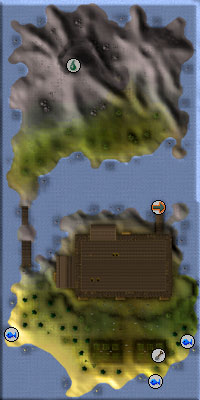

")
Braindeath Island (Members)
Warning | Introduction | Location | Points of Interest | Personalities | Quests
Here be Pirates | Miscellaneous
Here be Pirates | Miscellaneous
Warning
You cannot gain access to Braindeath Island without starting the Rum Deal quest.
Introduction

The island isn't very big, just the right size for a secret brewing operation, but it somehow manages to fit a huge number of people and zombies across its surface. This isn't an ideal set up for Captain Braindeath and his crew, but until the zombies are taken care of he doesn't really have much of an option.
Location

You can find Pirate Pete on the small dock north of Port Phasmatys, and he'll use his magical bottle of teleportation to convey you there safely. Maybe.
Points of Interest

West of the factory is a series of small islands connected by bridges that will deliver you to a dormant volcano with a lake of stagnant water.
Personalities
![[image]](../../img/main/kbase/npc/area_guides/chathead/captain_braindeath.gif) He's an interesting sort of fellow, the Captain. He likes his rum, and he likes his crew, but he doesn't seem to like his fans. He's probably a bit prejudiced against the dead (necrophobia), and this is the source of his problems: if only he'd held onto more rum, he could have given it to the zombies and cleared them out while they slept it off.
|
![[image]](../../img/main/kbase/npc/area_guides/chathead/captain_donnie.gif) Captain Donnie is Captain Braindeath's greatest problem, as it's his crew that have laid siege to the distillery. Judging by his remarkably staggering walk, he's either very, very drunk or very, very rotten (rotten as a corpse, not just rotten as a person).
|
|
| Captain Braindeath can be found in his office in the north of the factory. | Captain Donnie staggers around outside the gates to the distillery. |
![[image]](../../img/main/kbase/npc/area_guides/chathead/pirate_pete.gif) Pirate Pete sometimes lies in order to get what he wants, but that probably comes with his job as a pirate. He's the only man that knows the way to Braindeath Island, and he likes to keep it that way. If you're talking to Pirate Pete, try not to turn your back.
|
![[image]](../../img/main/kbase/npc/area_guides/chathead/braindeath_davey.gif) Davey used to be a priest of sorts, and he's carried his skills with him into his new career as a pirate brewer. It's usually up to him to bless the wrench that they need to repair the brewing controls when it gets possessed. It's a hard life for a pirate brewer priest.
|
|
| Pirate Pete can be found on the docks behind the distillery. | Davey can be found in the pirates' quarters west of the main factory. |
![[image]](../../img/main/kbase/npc/area_guides/chathead/50_percent_luke.gif) It's hard to imagine anyone stranger than 50% Luke. The tale of how he came to be both a zombie pirate and half wood is a tale that takes too long in the telling, and might just make you cry (no matter how stony and insensitive you are). Captain Donnie gives him the most important jobs, so it's a good thing no one can possibly sneak past him.
|
![[image]](../../img/main/kbase/npc/area_guides/chathead/zombie_protestor.gif) Captain Donnie's crew of zombie pirate protestors is a terrible sight to behold, especially if you have good reason to believe that they're after your rum. Their terrible slogans of 'United we stagger!' and 'Give us yer rum, ye scurvy dog!' are enough to petrify even the hardiest of pirate brewers.
|
|
| 50% Luke can be found guarding the bridge to the volcano. | The zombie protestors can be found in a picket line outside the main doors to the factory. |
Quests
There are no quests to start on Braindeath Island.
Here be Pirates
![[image]](../../img/main/kbase/npc/area_guides/fever_spider.gif) Fever Spiders are vile creatures that crawl about in the space underneath the rum distillery. They are Slayer monsters that require a Slayer level of 42, as well as some handy gloves that you can purchase from a Slayer Master.
|
![[image]](../../img/main/kbase/npc/area_guides/zombie_swab.gif) Being a swabber on a pirate ship was one of the worst jobs while they were alive, and being a zombie swab hasn't improved matters. The only advantage to being a zombie swab is that they are already used to the smell. They're quite aggressive, especially if you're trying to grow blindweed, but are also quite easily scared off.
|
|
| Fever spiders can be found beneath the distillery. | Zombie swabs can be found outside the brewing compound. |
![[image]](../../img/main/kbase/npc/area_guides/zombie_pirate.gif) If pirates be the commonest of scoundrels and seadogs and a surly bunch o' privateers, then zombie pirates be scurvier and surlier still, to be sure. Pirate zombies be full o' that old Braindeath Rum so they be feelin' no pain.
|
| Avast! Zombie pirates be found outside ye distillery as far as the south coast. |
Miscellaneous
- There are buckets near Captain Braindeath and under the distillery.
- Sometimes the zombie pirates drop rusty scimitars, which you cannot repair (even in your house's workshop, unlike rusty swords you might find elsewhere in RuneScape) but you can take them to Tindel Marchant in Port Khazard who will identify and repair them (if they're worth repairing) for a small fee.
- If you don't have Slayer gloves for fighting fever spiders, you will need Relicym's Balm to cure yourself if they manage to infect you.
- If you've lost your Holy Wrench, you can get it back from the person who first gave it to you.

More articles in
Other
|
|